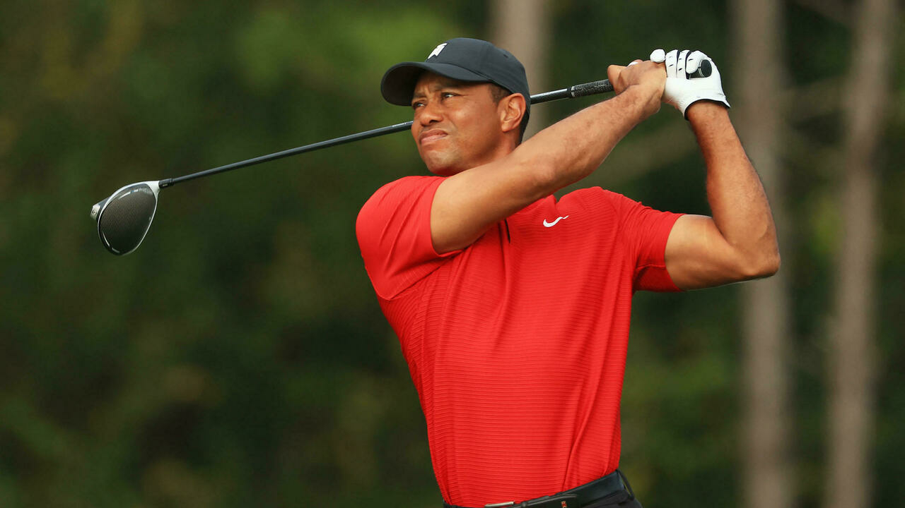

| Month |
Day |
Year |
| August |
16th |
2021 |
Tiger Woods
Eldrick Tont "Tiger" Woods is an American professional golfer. He is tied for first in PGA Tour wins, ranks
second in men's major championships, and holds numerous golf records. Woods is widely regarded as one of the
greatest golfers of all time and one of the most famous athletes in history
Interesting Facts about Tiger Woods
- He has 2 children: Sam Alexis and Charlie Woods
- In 1997, he was the youngest Masters winner ever.
- His longest drive was 420 yards

Tiger Woods Official Website
Here is a Youtube link of my favorite Tiger Woods Golf shot
2005 Tiger Woods Chip
Info about me: Moe Williams
I was born and raised in Massachusetts. I moved to the Bay Area in 2017 and married my lovely wife Lindsey on
May 5th, 2018.
Here are 5 fun facts about me
- I stand 6'6''
- I am left-handed
- My favorite food is Macaroni and Cheese
- My favorite sport to play is Golf
- My favorite team is the Dallas Cowboys
Here are the reasons why I'm excited to learn Software Development
- There are many opportunities
- Its a great profession living in the Bay Area
- There's opportunities for a flexible remote schedule
- Lucerative Pay
- It's challenging
My favorite movie is "Houseguest"

Fast-talking con man Kevin Franklin (Sinbad) is in over his head: He owes $50,000 to the mob, and they want
to collect. On the run, Franklin happens upon lawyer Gary Young (Phil Hartman) and his family, who are
waiting for an old friend Young hasn't seen in 25 years. Taking the opportunity for another con -- and to
save his neck -- Franklin convinces Young he's the old friend and becomes the family's houseguest. He has a
great hideout from the mob, but the Mafia henchmen are still on his trail.
List of Main characters
Houseguest movie trailer